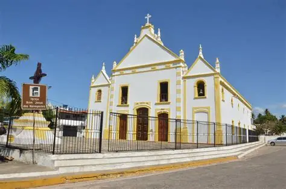

A Igreja Matriz de Touros, RN, tem uma rica história que remonta à chegada dos portugueses ao litoral potiguar em 1501. O primeiro desembarque foi feito em Touros, onde um marco foi fixado na praia dos Marcos, com a inscrição do ano de 1501 e a Cruz da Ordem dos Cavaleiros de Cristo.
A construção da Igreja Matriz, que foi construída entre 1798 e 1800, é um marco da história local, refletindo a influência colonial e a importância religiosa da região. A Igreja é animada por várias pastorais e serviços sociais, incluindo a Pastoral da Criança, e conta com um grupo de acólitos e a Legião de Maria. A Igreja Matriz é um símbolo da fé e da história de Touros, sendo um local de grande importância para a comunidade paroquial e para a cultura local.
localização:
 Voltar ao inicio
Voltar ao inicio